Bilgisayar İşletmenliği
1. Hafta: Açma-kapama, fare ve pencereler
Alıştırmalar ve oyunlar
Alıştırma bilgisayarında uygulamalı ders
Bu hafta
Altı ders, yüz dakika
| Ders | Süre | Alıştırma ve oyunlar |
|---|
| 1 Açma ve kapatma | 15 dk | Bilgisayarı aç, şifre gir; Uyku, Yeniden başlat, Kapat |
|---|
| 2 Fareyi tutma, tek tık | 15 dk | Dört köşe, Hedef oyunu |
|---|
| 3 Çift tık, sağ tık, tekerlek | 20 dk | Balon oyunu, Karışık hedef, Tarif kaydırma, Mayın Tarlası |
|---|
| 4 Sürükle-bırak | 15 dk | Simge taşıma, Kart dizme, Klasöre ve çöpe atma |
|---|
| 5 Pencereler | 20 dk | Hesap Makinesi ile küçült, büyüt, taşı |
|---|
| 6 Fare parkuru | 15 dk | 11 görevlik tekrar, süre tutulur |
|---|
Başlamadan önce
Alıştırmalar nasıl işliyor?
- Solda ne yapacağınız yazar, sağda alıştırma bilgisayarı vardır.
- Doğru yaptığınızda ekran kendiliğinden sonraki adıma geçer.
- Yanlış yaparsanız bir uyarı çıkar; takılırsanız ipucu açılır.
- Gerçek dosyalarınıza dokunmaz. Hiçbir şey bozulmaz.
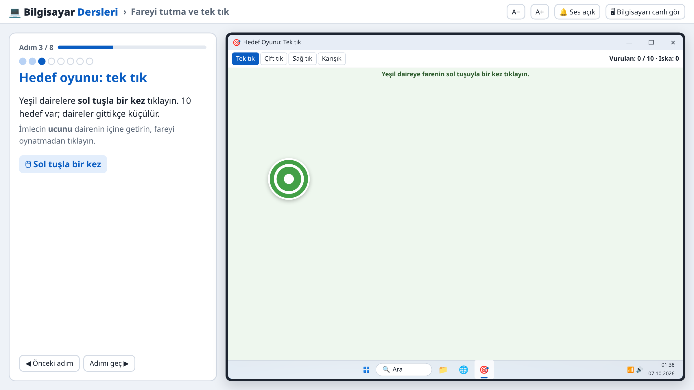
Sol: adım ve yönerge. Sağ: alıştırma bilgisayarı (burada Hedef oyunu açık).
Ders 1 · Açma ve kapatma
Bilgisayarın dört parçası
| Kasa | Asıl bilgisayar budur. Bütün işi o yapar. |
|---|
| Ekran | Kasanın yaptığını gösterir (monitör). |
|---|
| Klavye | Yazı yazarız. |
|---|
| Fare | Ekrandaki oku hareket ettirir, tıklarız. |
|---|
Dizüstü bilgisayarda (laptop) bunların hepsi tek parçadır.
Ders 1 · Alıştırma
Bilgisayarı açın
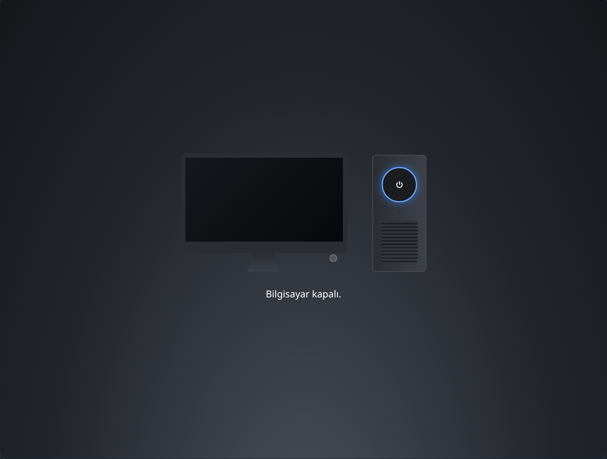
1. Kasadaki güç düğmesine bir kez basın. Ekranın düğmesi değil, kasanınki.
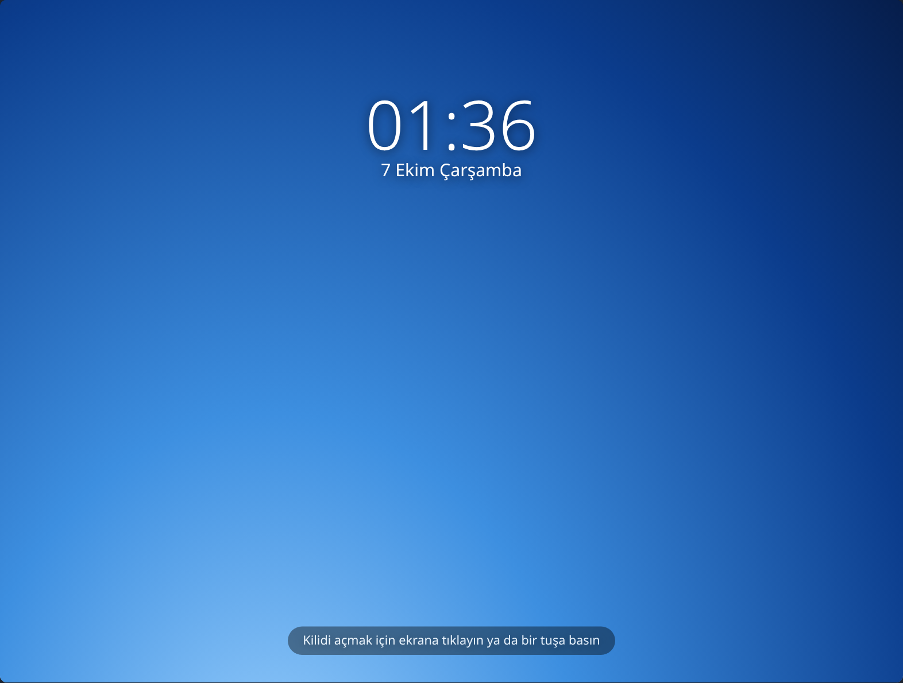
2. Kilit ekranına bir kez tıklayın ya da bir tuşa basın.
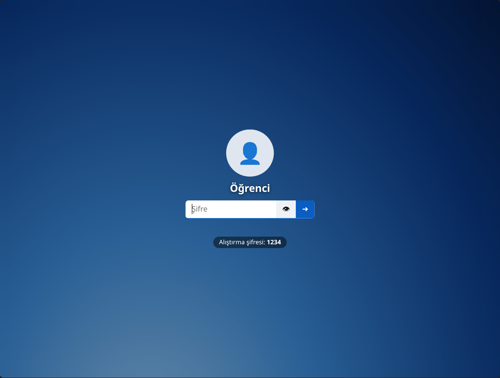
3. Şifreyi (1234) yazın, Enter’a basın. Harfler nokta olarak görünür.
Güç düğmesine basılı tutulmaz. Basılı tutmak, donmuş bir bilgisayarı zorla kapatır.
Ders 1 · Alıştırma
Kapatmanın üç yolu
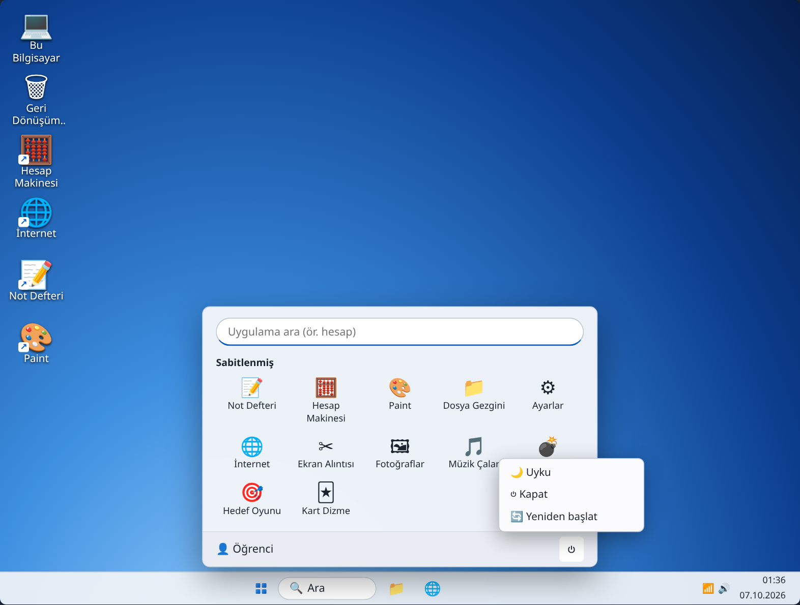
Başlat menüsü, sağ alt köşedeki güç simgesi.
| Uyku | Her şey yerinde kalır. Kısa aralar için. |
|---|
| Yeniden başlat | Yavaşlayınca, donunca, güncellemeden sonra. |
|---|
| Kapat | Gün sonunda. Bilgisayar işini toparlayıp kapanır. |
|---|
Fişten çekmek asla: kaydedilmemiş iş kaybolur, bilgisayar bir daha açılmayabilir.
Ders 2 · Fareyi tutma ve tek tık
Fareyi nasıl tutarız?
- Avucunuzu farenin üstüne rahatça koyun.
- İşaret parmağı sol tuşta, orta parmak sağ tuşta.
- Bileğiniz masaya dayalı olsun, fare masada kayar.
- Masanın kenarına geldiyseniz fareyi kaldırıp ortaya koyun. Ekrandaki ok yerinde kalır.
Ders 2 · Alıştırma 1
Dört köşe
- Ekrandaki ok, yani imleç, fareyle birlikte hareket eder.
- İmleci ekranın dört köşesine sırayla götürün.
- Değdiğiniz köşenin işareti yeşile döner.
Amaç: imleci istediğimiz yere götürebilmek.
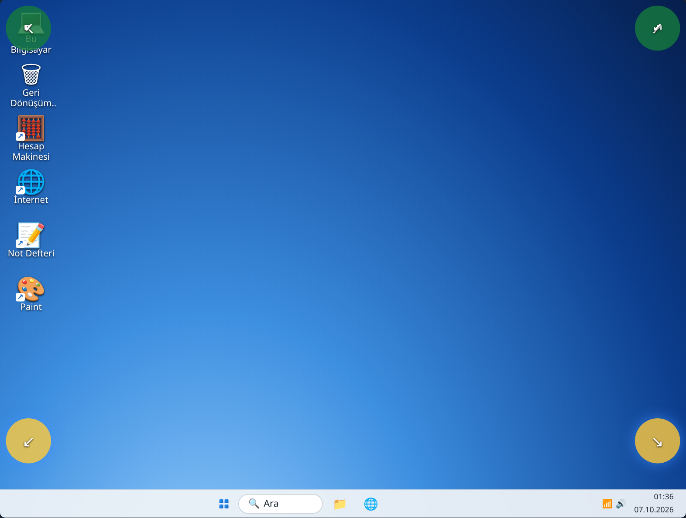
İki köşe tamamlandı, iki köşe kaldı.
Ders 2 · Oyun
Hedef oyunu: tek tık
- Yeşil daireye sol tuşla bir kez tıklayın.
- 10 hedef var; daireler gittikçe küçülür.
- Üstte vurulan ve ıska sayısı görünür.
- İmlecin ucu dairenin içinde olsun, fareyi oynatmadan tıklayın.
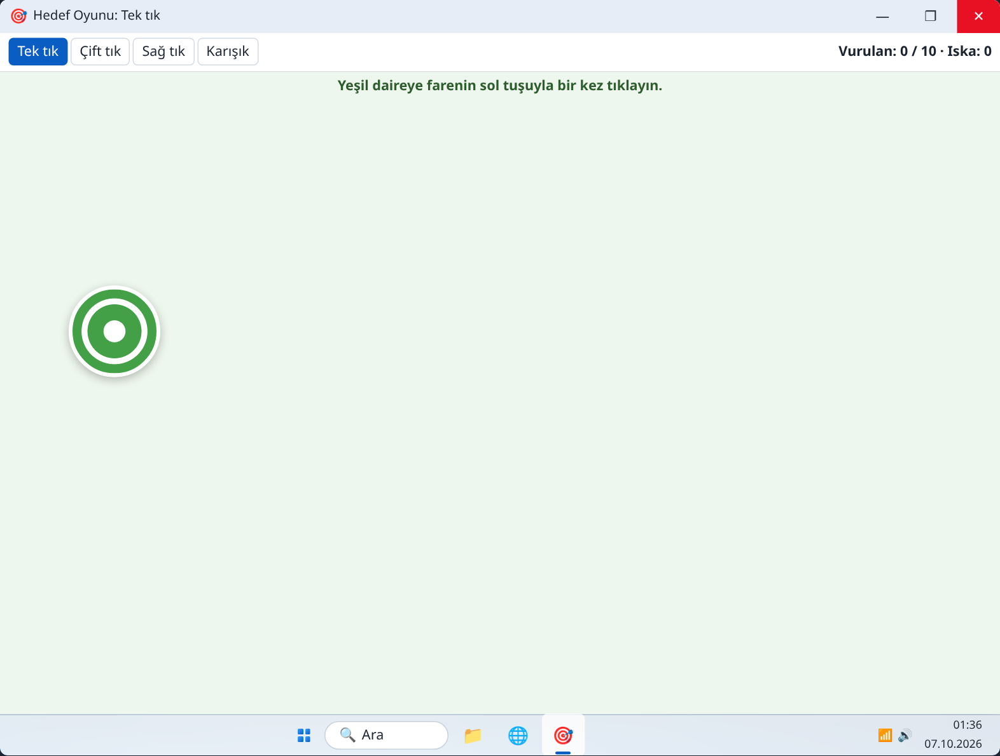
Oyunun üstündeki sekmelerle tek tık, çift tık, sağ tık ve karışık kipleri arasında geçilir.
Ders 2 · Alıştırma
Simge seçme ve düğmeye basma
| 1 | Geri Dönüşüm Kutusu’na bir kez tıklayın. Simge seçili olur. |
|---|
| 2 | Hesap Makinesi’ne tıklayın. Öncekinin seçimi kalkar. |
|---|
| 3 | Boş bir yere tıklayın. Seçim kalkar. |
|---|
| 4 | Başlat’a tıklayın, menü açılır. Bir daha tıklayın, kapanır. |
|---|
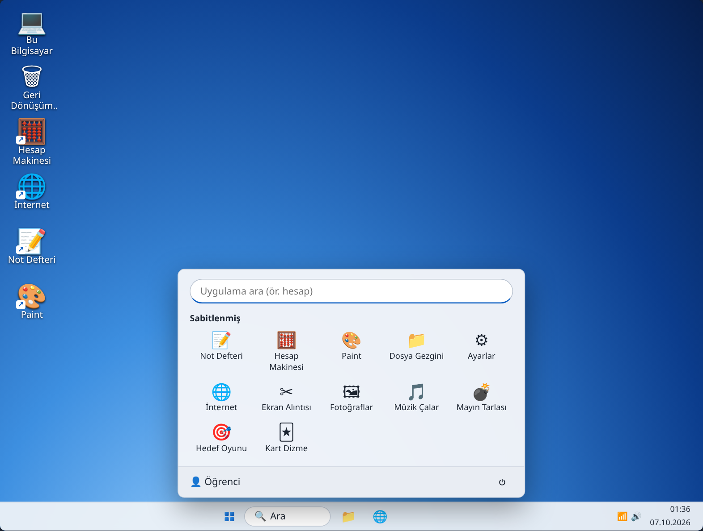
Başlat menüsü: bütün programlar burada.
Ders 3 · Oyun
Balon oyunu: çift tık
- Balona hızlıca iki kez tıklayın: tık-tık. 6 balon var.
- Tek tık balonu patlatmaz; oyun uyarır.
- Püf noktası: fareyi oynatmayın, yalnızca parmağınız hareket etsin.
Sonra Not Defteri simgesine çift tıklayıp açın, sağ üstteki ✕ ile kapatın.
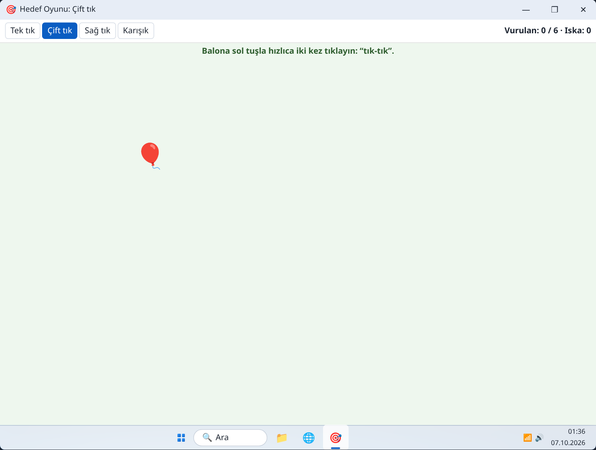
Çift tık herkesi başta zorlar. Acele etmeyin.
Ders 3 · Oyun
Karışık hedef: sol tık, sağ tık
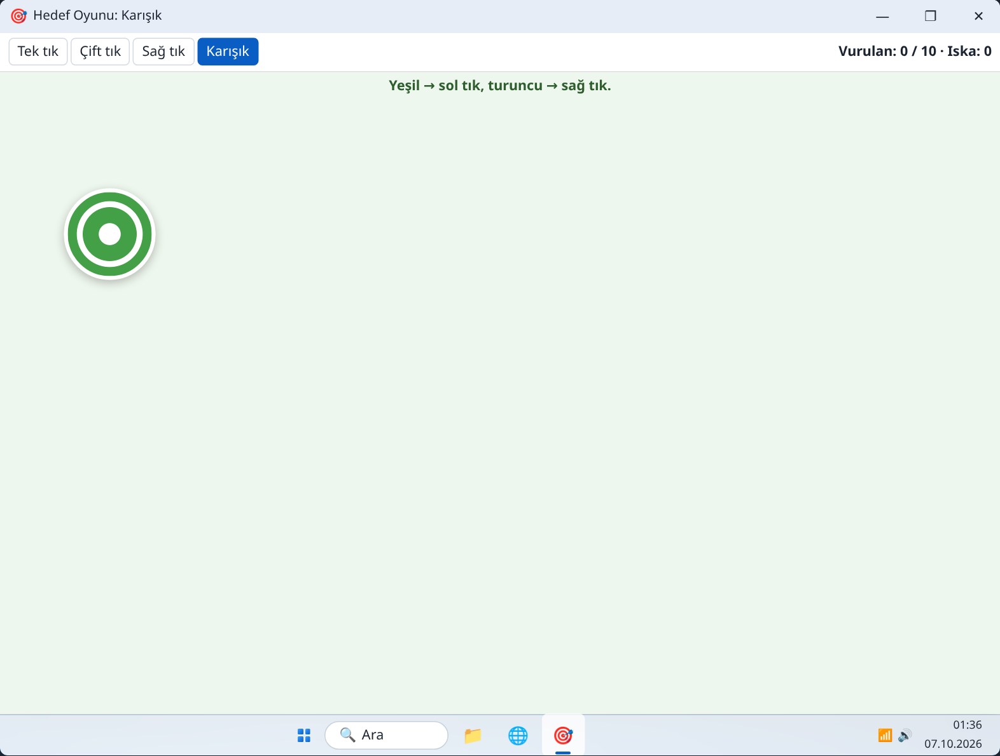
Yeşil daire: farenin sol tuşu
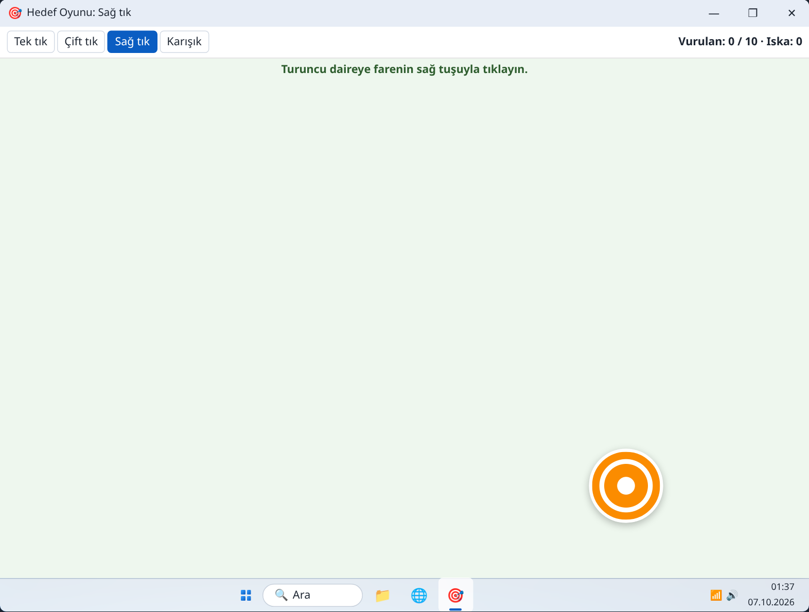
Turuncu daire: farenin sağ tuşu
Sağ tık “bununla neler yapabilirim?” diye sorar ve bir menü açar. Önce Paint simgesine, sonra masaüstüne sağ tıklayıp menüleri karşılaştırırız.
Ders 3 · Alıştırma
Tekerlek: tarifi sonuna kadar kaydırın
- Tekerleği kendinize doğru çevirin: sayfa aşağı iner.
- Tekerleği ileri çevirin: sayfa yukarı çıkar.
- Tarifin en altında gizli bir kelime var. Bulana kadar kaydırın.
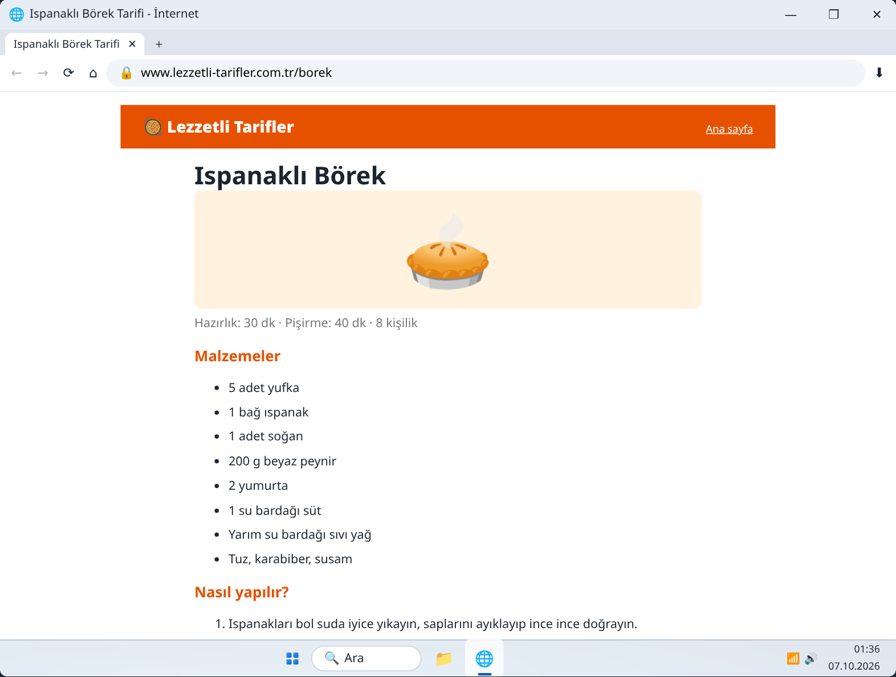
Uydurma bir tarif sitesi. Gerçek bir siteye bağlanmaz.
Ders 3 · Bonus oyun
Mayın Tarlası
- Sol tık kareyi açar. Sayı, çevresindeki mayın sayısını söyler.
- Sağ tık mayın olduğunu düşündüğünüz kareye bayrak koyar.
- Hem kare açın hem bayrak koyun.
- Mayına basarsanız gülen yüze tıklayıp yeniden başlayın.
Sol ve sağ tuş aynı oyunda kullanılır. İlk tıklama her zaman güvenlidir.
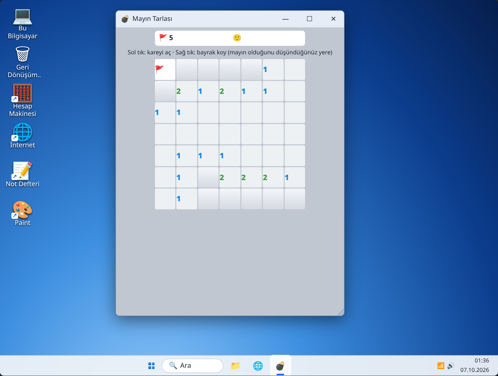
7 × 7 alan, 6 mayın. Sol üstte bir bayrak var.
Ders 4 · Sürükle-bırak
Tut, taşı, bırak
1
Fareyi nesnenin üzerine getirin.2
Sol tuşa basın ve basılı tutun.3
Parmağınızı kaldırmadan fareyi kaydırın.4
Gideceği yere gelince tuşu bırakın.
İlk alıştırma: Hesap Makinesi simgesini tutup masaüstünün sağ tarafına taşıyın.
Ders 4 · Oyun
Kart dizme
- Kartları tutup aşağıdaki yerlerine sürükleyin: A, 2, 3, 4, 5.
- Kartlar karışık gelir. Her oyunda sıra değişir.
- Yanlış yere bırakırsanız kart geri döner ve oyun bir ipucu verir.
Gerçek bilgisayarda aynı alıştırma: Başlat’a Solitaire yazın.
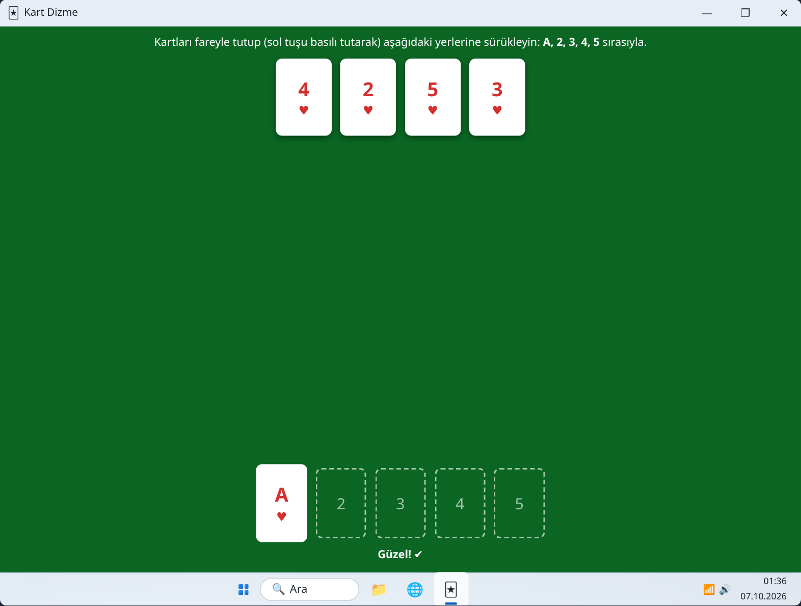
As yerine oturdu, 2 – 5 sırada.
Ders 4 · Alıştırma
Dosyayı klasöre, çöpe atın
| 1 | deniz.jpg resmini Fotoğraflarım klasörünün üzerine sürükleyin. Klasör maviye boyanınca bırakın. |
|---|
| 2 | Klasöre çift tıklayıp resmin içeride olduğunu görün. |
|---|
| 3 | eski not dosyasını Geri Dönüşüm Kutusu’na bırakın. |
|---|
Silinen dosya hemen yok olmaz; kutuya gider ve geri alınabilir.
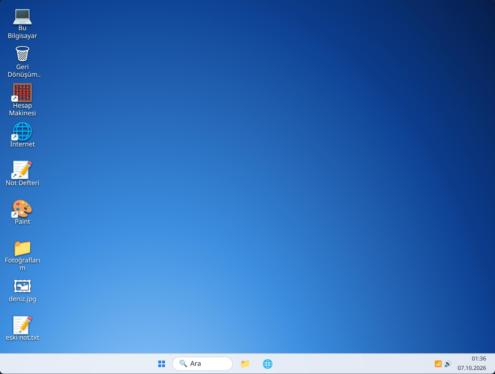
Masaüstünde klasör, resim ve gereksiz not dosyası.
Ders 5 · Pencereler
Pencerenin parçaları
Hesap Makinesi—☐✕
Pencerenin içi
| — | Küçült: pencere görev çubuğuna iner |
|---|
| ☐ / ❐ | Ekranı kapla / önceki boyut |
|---|
| ✕ | Kapat |
|---|
| Başlık çubuğu | Tutup sürükleyince pencere taşınır |
|---|
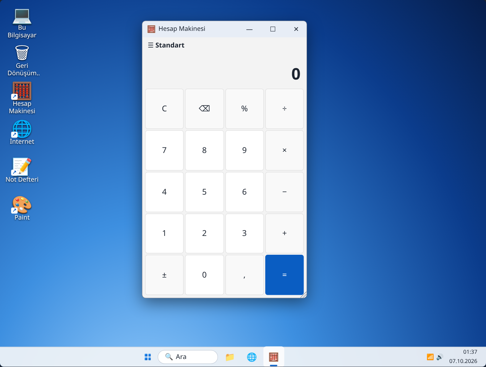
Alıştırma: Hesap Makinesi ile 12 + 7 hesaplayın, sonra pencereyi küçültüp görev çubuğundan geri getirin, kaplayın, taşıyın, boyutunu değiştirin.
Ders 6 · Tekrar
Fare parkuru: 11 görev
- Hesap Makinesi’ni çift tıklayıp açın
- 25 + 17 hesaplayın
- Küçültün
- Görev çubuğundan geri getirin
- ✕ ile kapatın
- Başlat’tan Not Defteri’ni açın
- Adınızı yazıp Enter’a basın
- Pencereyi taşıyın
- Kaydetmeden kapatın
- çöp.txt’yi Geri Dönüşüm Kutusu’na atın
- Bilgisayarı yeniden başlatın
Her görevin süresi tutulur. Sonda tablo çıkar, en uzun süren görev kırmızı görünür: kimin nerede takıldığı hemen anlaşılır.
Özet
Bu hafta öğrendiklerimiz
| Tek tık | Seçer, düğmelere basar |
|---|
| Çift tık | Simgeyi, dosyayı, programı açar |
|---|
| Sağ tık | “Bununla neler yapabilirim?” menüsü |
|---|
| Tekerlek | Sayfayı aşağı yukarı kaydırır |
|---|
| Sürükle-bırak | Bas, tut, kaydır, bırak: taşır |
|---|
| — ☐ ✕ | Pencereyi küçültür, kaplar, kapatır |
|---|
| Uyku / Yeniden başlat / Kapat | Kısa ara / bir şey ters gidince / gün sonu |
|---|
Evde tekrar
Kendi bilgisayarınızda deneyin
- Bilgisayarı açın, şifrenizle girin, Kapat ile kapatın. 2–3 kez tekrarlayın.
- Bir kez de Yeniden başlat deneyin.
- Başlat’a Solitaire ve Minesweeper yazın: sürükle-bırak ve sol/sağ tık için birebir alıştırma.
- Her gün birkaç dakika fareyle oynayın. Hız zamanla gelir.